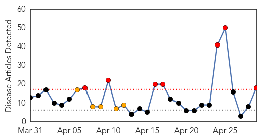
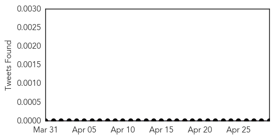
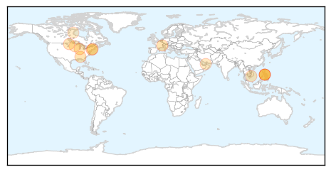

30 Day Trends
Web: 7 alerts, 5 warnings
Twitter: 0 alerts, 0 warnings
Top Articles:
- 0.982
- Measles outbreak declared in Calgary, Edmonton and central Alberta
- 0.952
- Measles outbreak declared in Maguindanao
- 0.952
- Measles outbreak declared in Calgary, Edmonton and central Alberta
- 0.939
- Measles Outbreak in Knox and Coshocton Counties
- 0.925
- Measles Case Reported In New Haven County, 3rd In State This Year
- 0.908
- SGGP English Edition- Media plays important role: Health Minister
- 0.899
- WHO emergency meeting on worldwide spread of polio
- 0.898
- Measles outbreak declared in Calgary, Edmonton and central Alberta
- 0.893
- Man Gets Measles In New Haven County, 3rd Case In State This Year
- 0.881
- Ohio measles outbreak expands
- 0.852
- Nearly Two Dozen Measles Cases Confirmed In The Region
- 0.846
- National Infant Immunization week begins
- 0.841
- Childhood Diseases Making a Comeback: Health Department
- 0.814
- Vietnam minister visits HCMC hospitals, urge measles patient isolation to curb spread
- 0.771
- Chinook's Edge receives measles caution letter
- 0.743
- Saudi- Millions of lives saved with immunizations every year
- 0.712
- Ask Dr. Hallberg: What's behind the resurgence of measles and mumps?
- 0.647
- The Southern Gazette
Top Tweets:
-
No tweets found for Apr 29, 2014
Web/News Articles
Tweets
Article Locations
Article Confidences